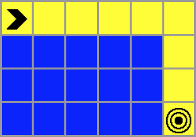

This is a pathing algorithm visualizer. It shows how different pathing algorithms work and the path that
they find from the start to the finish!
The two symbols below are the start and finish nodes. The arrow (on the left) is the start node and the
target (on the right) is the finish node.
You can move the start and finish nodes by clicking on them and dragging.
When you are ready, you can click on the "Run Algorithm" button and you can select the algorithm that you
want to run from the dropdown.
After you run the algorithm, you will see blue and yellow squares. The blue shows which squares were searched and the yellow shows the path that the algorithm found from the start to the finish.
You can also add walls, which are shown by the black squares, that the pathing algorithms
cannot go through. To create walls, click and drag over empty sqaures.
To clear all of the walls, you can click on the "Clear Walls" button at the top of the screen.
Another thing that you can add is a coin. When there is a coin in one of the squares, the pathing algorithm
must first collect the coin before reaching the finish.
A coin can be added by clicking the "Add Coin" button and removed by clicking the same button, which will
be changed to "Remove Coin" when there is already a coin. The coin can be moved by clicking and dragging,
just like the start and finish nodes.
When a coin is added, the algorithm is run two different times. It runs once to find the coin (which is
displayed in blue) and once to find the target (which is displayed in green)
The path is still displayed in yellow unless the path to the coin and the path to the finish overlap. If the
two paths overlap, the color of the overlapped squares will be changed to purple.